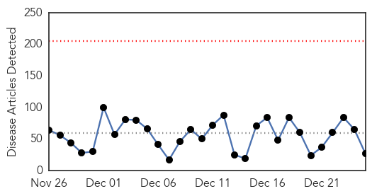
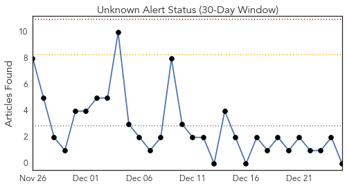
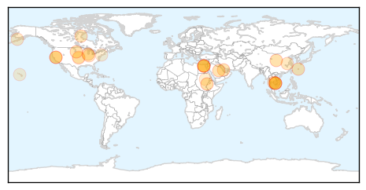
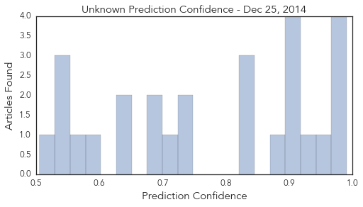

Toggle navigation
Early Warning
Daily Alerts
Unknown
Dec 25, 2014
30 Day Trends
Web: 0
alerts
, 0
warnings
Twitter: 0
alerts
, 0
warnings
Top Articles:
0.991
Tenth Egyptian dies of H5N1 bird flu - Health Ministry
0.985
Tenth Egyptian dies of H5N1 bird flu
0.981
Flu season's 1st death reported in Hutchinson Co.
0.972
Tenth Egyptian dies of H5N1 bird flu: Health Ministry
0.965
Travelers to Guangdong cautioned over H5N6 flu
0.932
Listeria at a glance
0.917
Chicago Tribune
0.917
Chicago Tribune
0.917
Chicago Tribune
0.897
Personal ‘hygiene can prevent hand, foot and mouth disease’
0.889
Californians warned to avoid caramel apples after listeria outbreak
0.843
Health officials recall caramel apples
0.838
Unlicensed doctor with dirty needles infects 119 with HIV
0.822
More than 160 villagers infected with HIV in northwest Cambodia - Xinhua
0.736
Injection abuse raises concerns in China, Others news, Health News, AsiaOne YourHealth
0.727
Newly Discovered 'Bourbon Virus' Kills Kansas Man
0.717
It's peak flu season here in Michiana
0.686
Over 160 found HIV positive in a Cambodia village
0.680
Health officials monitoring botulism outbreak in Bristol Bay
0.650
Ministry tackles unlawful doctors, National, Phnom Penh Post
0.636
More than 160 infected in HIV outbreak in Cambodia
0.580
Sudan orders senior UN officials to leave
0.563
Sudan orders senior UN officials to leave
0.545
Study shows heat waves may lead to increased hospitalization amongst seniors
0.538
What the City of New York Did to "Typhoid Mary" Was Pretty Horrific
0.536
Sudan orders senior UN officials to leave
0.505
Firm recalls caramel apples amid listeria fears
Top Tweets:
No tweets found for Dec 25, 2014
Web/News Articles

Tweets

Article Locations

Article Confidences
